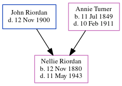

Nellie C Riordan 1880 - 1943
[ Home ] | [ Calendar ] | [ Surnames Index ] | [ Census Index ] | [ Family History ]The child of John Riordan (a prominent cotton buyer/brpler) and Annie Turner, Nellie Riordan, the great-great-aunt of Michele Copp (née Phillips), was born in Georgia on Nov 12, 18801,2,3,4,5,6.
During her life, she was living in Atlanta, Fulton, Georgia, USA in 18801; in Atlanta Ward 4, Fulton, Georgia in 19002; in Atlanta Ward 6, Fulton, Georgia in 19103; in Atlanta Ward 9, Fulton, Georgia in 19204; and in Los Angeles, Los Angeles, California in 19305.
She died on May 11, 1943 in Los Angeles6.
Parents
- John was born c. 29 Jun 1840
- Annie R was born on Jul 11, 1849
Citations
- 1880 United States Federal Census Online publication - Provo, UT, USA: The Generations Network, Inc., 2005. 1880 U.S. Census Index provided by The Church of Jesus Christ of Latter-day Saints © Copyright 1999 Intellectual Reserve, Inc. All rights reserved. All use is subject to the limite (Marital Status: Single; Relation to Head: Daughter)
- 1900 United States Federal Census Online publication - Provo, UT, USA: MyFamily.com, Inc., 2004.Original data - United States of America, Bureau of the Census. Twelfth Census of the United States, 1900. Washington, D.C.: National Archives and Records Administration, 1900. T623, 1854 rolls.
- 1910 United States Federal Census Online publication - Provo, UT, USA: The Generations Network, Inc., 2006. For details on the contents of the film numbers, visit the following NARA web page: NARA.Original data - United States of America, Bureau of the Census. Thirteenth Census of the Unit
- 1920 United States Federal Census Online publication - Provo, UT, USA: MyFamily.com, Inc., 2005. For details on the contents of the film numbers, visit the following NARA web page: NARA. Note: Enumeration Districts 819-839 on roll 323 (Chicago City.Original data - United States of America
- 1930 United States Federal Census Online publication - Provo, UT, USA: MyFamily.com, Inc., 2002.Original data - United States of America, Bureau of the Census. Fifteenth Census of the United States, 1930. Washington, D.C.: National Archives and Records Administration, 1930. T626, 2,667 rol
- California Death Index, 1940-1997 Online publication - Provo, UT, USA: The Generations Network, Inc., 2000.Original data - State of California. California Death Index, 1940-1997. Sacramento, CA, USA: State of California Department of Health Services, Center for Health Statistics.Original d
Family Tree
Generated by ged2site. Last updated on Jun 6, 2024